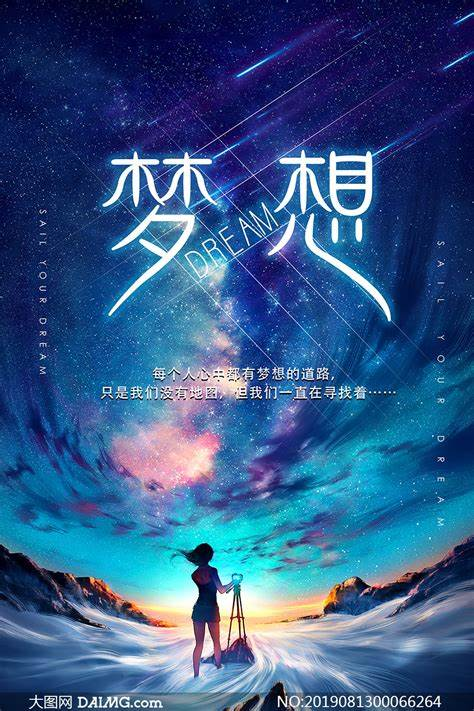

关于我
生活明朗，万物可爱。人间值得，未来可期。 ——题记 刘同说：“青春就九个字：不要脸，拼了命，尽了兴。” 所谓青春，或许并没有那些电视剧中不切实际的美好，没有那么多太过夸张的情感，也没有一帆风顺的生活。但是，正值青春的我们，却依旧充满了不同的色彩。在这彩色的青春中，我们扬帆、起航。 青春很苦。在青春这条坎坷的道路上，少年们一次次的面对着一个一个接踵而来的困难。这些困难，或许是低了一点的分数为梦想染上的一点灰色，或是与朋友的两三句不和为心情染上的一点愤懑，亦或是青春期的暴躁为家庭间染上的一点间隔。青春的这条道路，没有人说是简单的、容易的，它让我们为了一件件小事而辗转反侧，疲惫不堪，它亦是让我们感觉到了无助和彷徨。也许在某一时刻，我们会觉得像是掉入了荒岛一般的无望，无所适从，但只要披荆斩棘，哪怕伤痕累累也要记住只顾勇敢的朝着前迈去吧，或许明天，你便能到达充满花开的彼岸。 青春也很美。在许多作者的笔下，青春被许许多多朴实或华丽的文字所修饰，被赋予了各种各样深刻的含义。而少年们眼中的青春则是被阳光沐浴着的青春，我们有肆意挥洒汗水奔跑的权利，我们可以做着那不切实际的梦，渴望着或许明天那些梦便能实现。我们也拥有着大把大把的时间，去挥霍在值得去做的事情上，去充实自己，做错了没关系，因为我们有机会去改变将来要走的路，去改变自己一生的命运。 在那样一个晨光洋溢着的清晨，我们将启程自己的旅行。“等风来不如追风去”，我们将背上充满梦想的行囊，寄予青春激情与勇敢，在旅途中，大道与小径，鲜花与荆棘都将一并而来，但我们始终砥砺前行，不言放弃。 正如《平凡的世界》中所言：“只有永不遏制的奋斗，才能使青春之花即便是凋谢，也是壮丽的凋谢！”青春是一抹最美的阳光，不要在该奋斗的年纪里选择安逸。热血青年更应富有朝气，为青春书写壮丽的诗篇。心中有梦，未来可期，所以披星戴月，风雨兼程。
